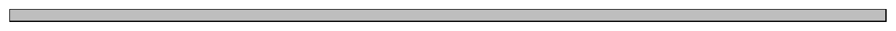
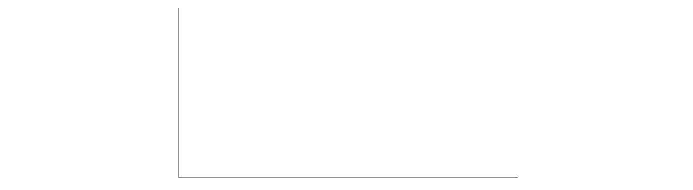
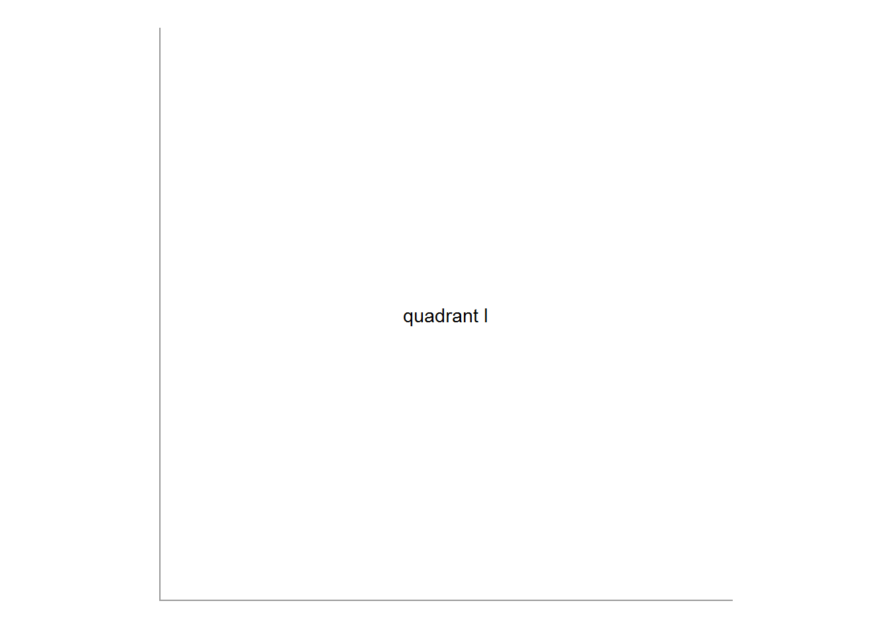
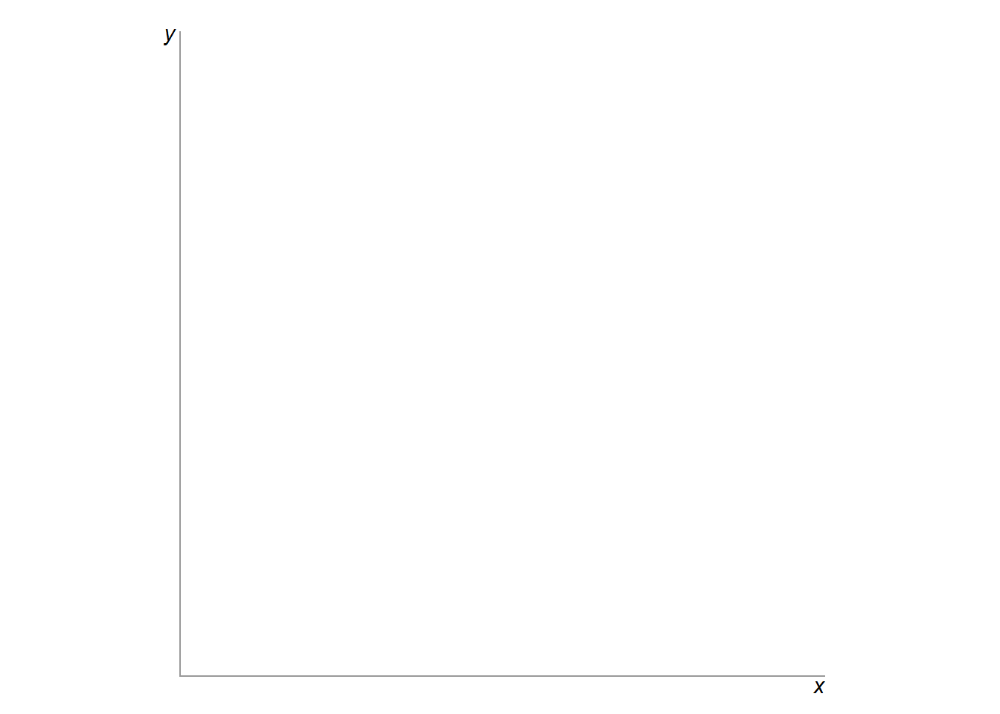
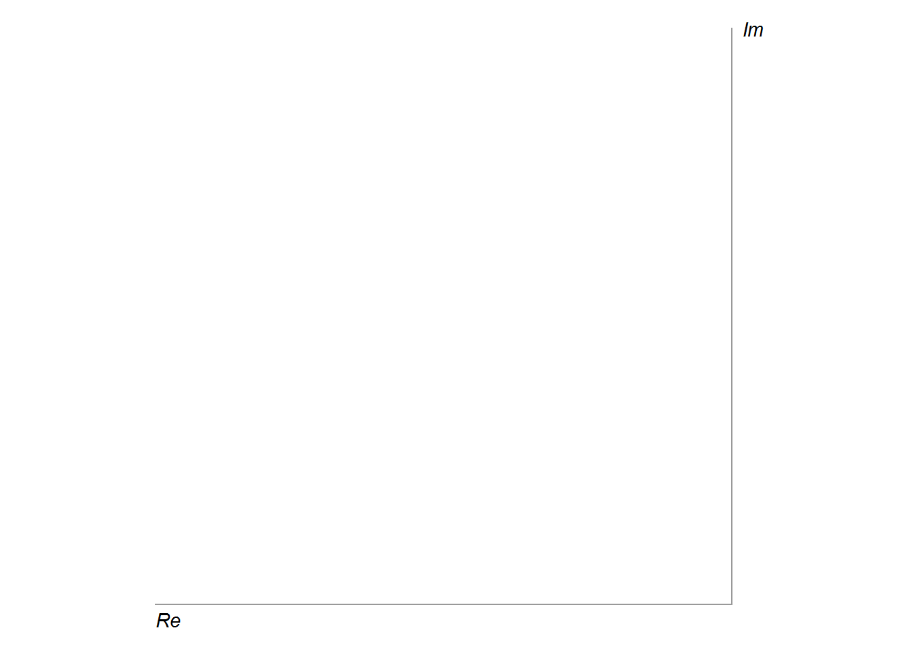

Documents designed for workshop or classroom participation typically provide information, examples, and prompts with room for participants to respond. The functions described here provide space in a document for written responses.
put_gap() function inserts a blank space in the document.put_axes() function inserts an empty coordinate frame in the output document.Both functions work by creating and returning a ggplot2 object.
# packages used in the vignette
library(docxtools)This function allows the author of Rmd to docx documents to insert a vertical white space of specified height.
The white space is an empty ggplot2 object. The only assignment is the panel background, made with theme(panel.background = element_rect()).
The usage is put_gap(col = NULL, fill = NULL) to specify the color of the rectangle border and its fill. Defaults are “transparent”.
The dimensions of the gap are determined when it is printed. For example, to create a 0.75 inch gap in an R Markdown output document, we set the dimension in the knitr code chunk header,
```{r fig.height = 0.75}
put_gap()
```produces this output (the border is an HTML artifact and would not appear in a Word document):
With color and fill arguments and an optional width argument in the code chunk header,
```{r fig.height = 0.25, fig.width = 7}
put_gap(col = "black", fill = "gray")
```
Here’s an image from a Word document where space for written responses was created using put_gap().
A gap can also be used to force a page break. Alternatively, Norbert Köhler shows how to insert page breaks using Word Styles, see R Markdown: How to insert page breaks in a MS Word document.
put_axes() creates and prints an empty, 2-dimensional coordinate axes using ggplot2 with no scales, no tick marks, and no axis labels.
Usage is put_axes(quadrant = NULL, col = NULL, size = NULL).
quadrant 0 for all quadrants; 1, 2, 3, 4 for a single quadrant; or any combination of adjacent quadrants, e.g., 12, 21, 23, 34, etc. The default is 1.col is line color. Default is gray60.size is line size. Default is 0.5.The size of the figure is determined when printed, e.g., using knitr in an R Markdown script, the figure height in inches is set with the fig.height code chunk option.
```{r fig.height = 2}
put_axes()
```The default aspect ratio is 1, though it can be edited using coord_fixed() from ggplot2.
library(ggplot2)
put_axes() +
coord_fixed(1/2) # ratio of y/x
The graph object can be edited using the usual ggplot2 annotations. For example, to place some text in the middle of the graph,
p <- put_axes() +
annotate("text", x = 0.5, y = 0.5, label = "quadrant I")
p 
We can add text labels to label the axes using annotate()
p <- put_axes() +
annotate("text", x = c(1, 0), y = c(0, 1)
, label = c("x", "y")
, vjust = c(1, 0.5)
, hjust = c(1, 1.5)
, fontface = "italic"
)
p
Or we can use the usual labs() after resetting the theme axis.title,
p <- put_axes() +
theme(axis.title = element_text()) +
labs(x = "new x", y = "new y")
pIf we use annotate() and the label exceeds the data rectangle, we can make the plot margin larger and override the plot clipping.
p <- put_axes(2) +
annotate("text", x = c(-1, 0), y = c(0, 1)
, label = c("Re", "Im")
, vjust = c(1.5, 0.5)
, hjust = c(0, -0.5)
, fontface = "italic"
) + # top, right, bottom, left
theme(plot.margin = unit(c(0, 5, 2, 0), "mm"))
# override clipping
library(grid)
pp <- ggplot_gtable(ggplot_build(p))
pp$layout$clip[pp$layout$name == "panel"] <- "off"
grid.draw(pp)